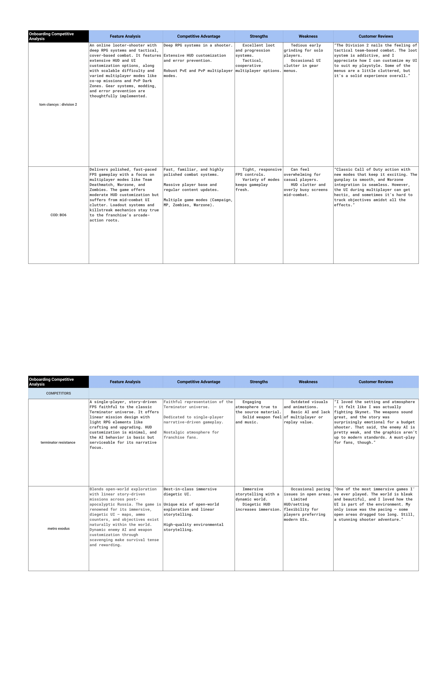

.png)

- Project Name: Terminator: Future War — Hypothetical Sequel
- Project Type: Independent Game UX/UI Design Concept
- Role: UX/UI Designer (Solo Designer)
- Tools Used: Figma, Adobe Photoshop, Photopea, Game UI Database, Dribbble, Behance
- Timeline: 3 Weeks
- Objective: Reimagine the user interface for a hypothetical sequel to Terminator: Resistance, focusing on intuitive inventory management, streamlined navigation, improved information hierarchy, and a cohesive retro-futuristic visual identity inspired by the Terminator universe.
Terminator: Future War explores how immersive visual storytelling and practical game UX/UI principles can work together. Through organized inventory systems, refined vendor interfaces, consistent navigation, and a Skynet-inspired design language, this concept aims to make essential player interactions clearer while preserving the franchise's gritty, dystopian atmosphere.
UX/UI Design Opportunities Inspired by Terminator: Resistance:
- Inventory and Resource Management: Managing weapons, equipment, and supplies in a survival-focused environment presents an opportunity to improve item organization, readability, and access to essential information.
- Navigation and Information Hierarchy: Complex gameplay systems require clear menu structures and visual prioritization so players can easily identify objectives, equipment details, and available actions.
- Visual Consistency and Immersion: The Terminator universe offers an opportunity to strengthen the connection between functional interfaces and its dystopian, technology-driven atmosphere through cohesive typography, colors, and visual elements.
- Vendor and Equipment Interactions: Purchasing, comparing, and managing equipment requires clear item descriptions, pricing, resource indicators, and recognizable interaction patterns to support informed player decisions.
Why Design a Hypothetical Sequel?
- To explore a modernized game interface that balances practical usability with the cinematic, war-torn atmosphere of the Terminator universe.
- To create more structured inventory and vendor interfaces that emphasize readable item information, organized navigation, and consistent interaction patterns.
- To establish a cohesive retro-futuristic visual identity inspired by Skynet technology, Resistance equipment, and the franchise's recognizable science-fiction aesthetic.
- To demonstrate how information architecture, visual hierarchy, and player-centered design principles can support a more intuitive and immersive game interface.
Research Snapshot
The Problem
Cluttered interfaces, overwhelming menus, and unclear mission tracking can interrupt immersion in story-driven sci-fi shooters.
The Gap
Players who value clean, functional interfaces need clearer navigation, meaningful customization, and easier access to essential gameplay information.
The Goal
Explore an intuitive, minimalist game interface that balances usability, player immersion, and the dystopian visual identity of the Terminator universe.
Core Player
.png)
Meet Alex Ramirez, a 27-year-old freelance graphic designer and sci-fi gaming enthusiast who values immersive storytelling, tactical gameplay, and clean, functional interfaces. His preferences highlight opportunities to reduce menu complexity, improve mission visibility, and preserve immersion through thoughtful UI design.
What the Persona Values
Intuitive Navigation
Clear menus and accessible mission information that help players stay focused on gameplay rather than navigating complicated interfaces.
Immersive Storytelling
A minimalist, visually cohesive interface that complements the Terminator universe without distracting from its atmosphere and narrative.
Meaningful Customization
Organized equipment and interface options that support player preferences while keeping essential information readable and easy to find.
Competitive Benchmarking
I analyzed Tom Clancy's The Division 2, Call of Duty: Black Ops 6, Terminator: Resistance, and Metro Exodus to explore how different shooters approach HUD customization, information hierarchy, gameplay navigation, and immersion. The Division 2 demonstrates extensive interface customization, while Black Ops 6 emphasizes responsive combat and varied game modes. Terminator: Resistance highlights atmospheric storytelling, and Metro Exodus demonstrates how a minimal, diegetic interface can reinforce immersion. These comparisons helped identify opportunities to balance readability, customization, and the Terminator franchise's dystopian visual identity in my hypothetical sequel concept.

What Changes
Design Improvements
- Organized inventory layouts for weapons, equipment, and resources
- Clearer item information, pricing, and vendor interactions
- Improved visual hierarchy and consistent menu navigation
- Cohesive retro-futuristic visuals inspired by the Terminator universe
Intended Player Benefits
- Easier discovery of weapons, equipment, and available resources
- More informed decisions when managing or purchasing items
- Less effort spent locating essential menu information
- Greater visual continuity between gameplay systems and the game's dystopian atmosphere
Research & Design Insights
My competitive analysis explored how four sci-fi and tactical shooters approach interface customization, gameplay systems, visual clarity, and immersion. The Division 2 highlighted the benefits of customizable interfaces, while Black Ops 6 demonstrated responsive combat systems alongside potential interface clutter. Terminator: Resistance emphasized atmospheric storytelling, and Metro Exodus demonstrated how minimal, diegetic UI can complement an immersive game world. These observations informed my approach to menu organization, information hierarchy, and visual consistency for Terminator: Future War.
Design Challenge
The Balance
Preserve the Terminator universe's gritty, dystopian atmosphere while ensuring inventory information, equipment details, and navigation elements remain readable, organized, and accessible.
The Design Approach
Apply lessons from modern shooter interfaces to create structured inventory and vendor layouts, consistent navigation patterns, and a cohesive retro-futuristic visual language inspired by Resistance technology and Skynet aesthetics.
Wireframe & Design Evolution
High-Fidelity UI Design
Building on my player persona and competitive analysis, I developed high-fidelity concepts for two essential interfaces in Terminator: Future War: the Armory and Outpost. Both screens explore how structured layouts, clear information hierarchy, and consistent navigation can support equipment management and purchasing decisions while preserving the Terminator universe's gritty, retro-futuristic atmosphere. The Armory features a radial weapon selection layout, equipped item slots, ammunition indicators, and a categorized inventory grid. Selected weapons display detailed descriptions and performance statistics, allowing players to review their equipment within a single interface. The Outpost organizes available weapons, armor, and modifications into distinct categories, with item cards, rarity indicators, currency information, and contextual purchase and comparison controls. A featured item panel provides additional details alongside a Resistance character visual, reinforcing the game's narrative setting. Together, these designs demonstrate my approach to information architecture, visual consistency, and player-centered interface design, combining functional game menus with a cohesive dystopian aesthetic.
Design Iteration: From Initial Concept to Final Design
My initial designs for Terminator: Future War explored colorful equipment cards, cinematic environments, and prominent navigation elements. However, the bright backgrounds, inconsistent typography, and oversized interface components competed with important gameplay information and felt disconnected from the franchise's darker visual identity. To address these issues, I refined both the Outpost and Armory interfaces with a darker color palette, more consistent navigation, improved information hierarchy, and structured inventory layouts. Inspired by the atmospheric presentation of Metro Exodus and the equipment-management systems explored in my competitive analysis, the final concepts emphasize readable item information, recognizable controller prompts, and a cohesive retro-futuristic aesthetic.
Initial Concepts vs. Final Designs
.png)
.png)
Terminator: Resistance vs. Terminator: Future War
This comparison explores how the original Terminator: Resistance approaches weapon upgrades and character progression alongside my independent Terminator: Future War UI concept. The original game uses a restrained, monochromatic interface with detailed weapon modification slots and a branching skill progression system. Building on these foundations, my redesign explores a more visually structured approach through categorized equipment management, icon-based augmentation cards, consistent navigation, and clearer information grouping. The Future War concept introduces a unified navigation system featuring Map, Operations, Armory, Augmentations, and Outpost, supported by dark grid backgrounds, cyan highlights, condensed typography, and Xbox-style controller prompts. These design decisions aim to improve the discoverability of equipment and progression information while maintaining the Terminator universe's dystopian, technology-driven visual identity.


What I Learned
- Balancing Immersion with Usability: Designing interfaces for the Terminator universe taught me how to balance atmospheric visual storytelling with practical usability. Dark backgrounds, futuristic typography, and cyan accents helped establish a dystopian aesthetic while keeping equipment information, navigation, and player actions visually organized.
- Iteration Strengthens Design Decisions: Comparing my initial concepts with the final Armory and Outpost designs reinforced the importance of evaluating visual hierarchy, color consistency, and layout structure. I learned to preserve effective elements, such as the radial weapon selection system, while refining navigation, typography, and inventory presentation.
- Research Provides Direction, Not Validation: Developing a scenario-based player persona and analyzing The Division 2, Black Ops 6, Terminator: Resistance, and Metro Exodus helped me identify design opportunities related to navigation, customization, and immersion. Without direct usability testing, these insights served as a foundation for design exploration rather than proof of improved player performance.
- Consistency Reinforces Franchise Identity: Establishing a cohesive visual language across the Armory, Outpost, and Augmentations interfaces demonstrated how consistent typography, colors, navigation patterns, and controller prompts can create a recognizable experience while respecting the Terminator franchise's established aesthetic.
- Information Architecture Supports Complex Game Systems: Organizing weapons, equipment, vendor items, and character augmentations taught me how important clear categorization and information hierarchy are in game interface design. Separating essential information into recognizable sections can help players understand available options without overwhelming the interface.